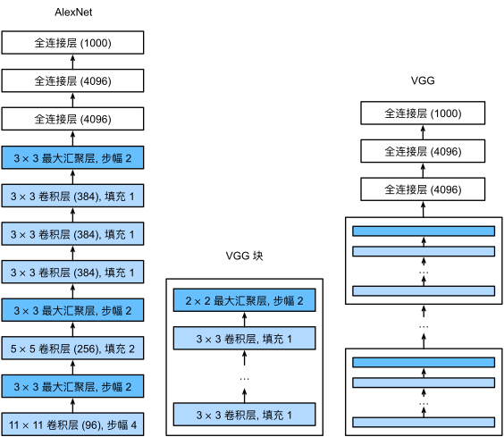
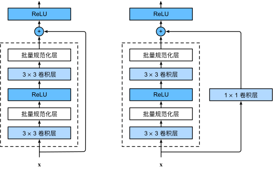

深度学习——卷积神经网络（二）
卷积神经网络
为了解决图像处理等具有大量输入的数据，使用全链接参数会变得十分庞大，但是在图像中有很多特征是具有平移不变性，以及局部性的，所以将这些特征提取出来就用到了卷积。
1 卷积核
卷积核的大小是卷积神经网络的一个超参数，一般选 3x3 或 5x5。图像 nxn，经过 kxk 的卷积后变成(n-k+1)x(n-k+1)。
2 padding stride
为了应对卷积使输入图像的一些边沿内容不能被扫到，增加边长叫 padding。经 pxp 的 padding 和卷积后，原图变为 (n+p-k+1)x(n+p-k+1)。同时为了使计算更加高效也用了跳步去扫描图像叫 stride。经以上步骤，原图变为 (n+p-k+s)/s x (n+p-k+1)/s。
3 pooling
为了应对卷积时对图像特征位置敏感的问题，将 pooling 核范围内的值进行取最大或求平均。通常步长与核大小相同。
4 卷积维度
为了获得更多的特征信息，对图像进行卷积时常常将原图像的通道数进行扩张。所以卷积核的数量是 cout x cin。卷积时将不同输入层卷积后的数据进行叠加得到每个通道输出。而 pooling 不会改变输入输出的维度。

5 LeNet
为了将 28 x 28 的手写数字图像识别出来，使用的卷积神经网络得到图像更多特征后，将其拉成一列，用全连接层获得最终输出。这里对比直接使用全连接层进行识别就少了很多的参数，经卷积后特征只有16x5x5，使用全连接有 28x28。
6 现代神经网络
6.1 AlexNet
随着计算能力提升，为了使网络效果更好往往设计更深更大的网络。该网络与LeNet对比使用了更多的卷积层。
6.2 VGG
为了克服 AlexNet 不够标准的结构，设计 VGG 模块，每个模块有多个卷积层，每个卷积层使用 3x3 卷积核使通道增加，其中第一个卷积层维度增加，后面几个卷积层层数与输出保持一致，最后经过一个池化层宽高减半。
6.3 NIN
VGG 网络中存在最后的全连接层参数过多，占用内存大的问题，在每个 NIN 模块中，使用两个 1x1 的卷积层进行进行卷积，最后再使用全局池化层获得网络最终输出。
6.4 GoogLenet
为了解决不同大小的卷积核，带来不同的效果，设计 inception block 对相同输入进行并行计算，最后再对不同卷积核的输出层进行连接。
再对多个 inception block 连接得到 GoogLenet。
6.5 批量规范化
为了应对深度神经网络，较底层的参数，梯度较小，更新较慢，而上层的参数变化较大，导致整个网络不稳定，模型收敛慢。通常在激活层之前加入批量规范化层
其中 γ 和 β 是可以被训练的参数，针对不同层进行不同的缩放。特别注意的是，在训练和测试时使用不同的均值与方差，训练时使用的是小批量内的，而测试时使用的时全部数据的。还有均值和方差在卷积层与全连接层有所不同，在卷积层针对的时层进行计算，而在全连接是针对每个特征进行计算。
6.6 ResNet
为了解决深度神经网络在优化过程中无法到达最优解的情况，在每一个新增的层增加一个输入直通输出或者经过 1x1 卷积（解决输入输出层数不同问题）通到输出的通道，使新的网络从原来的 f(x) 变成 f(x) + x。输入可以直接通到下一层的输入，保证整个网络不会歪掉。同时 ResNet 也解决了梯度消失的问题，当网络很深的时候，较底部的层梯度往往比较小，在加入额外的直连通道后，反向传播时相当于梯度做加法，梯度增加。所以 ResNet 通常可以有很多很多的层。
7 计算机视觉
卷积神经网络经常被用于图像处理领域。同时该领域也有很多其他的方法。
7.1 数据增强
在模型进行训练时可以观察测试数据的特征，如过有大量色温，物体部分画面，不同宽高比。这时进行训练时，数据也可以进行一定的变换，使得模型的泛化能力更强。
7.2 微调模型
为了使模型具有一定的泛化学习能力，往往将相同的模型在复杂数据集上训练得到的参数应用于相对更简单的数据集上。而在物体识别问题上，往往将网络在 ImageNet 训练好的卷积层参数（也就是体征识别的地方）拿到所需要识别的数据集上，并较快地改变全连接层参数，而对特征识别地参数只给一个小的学习率进行微调。